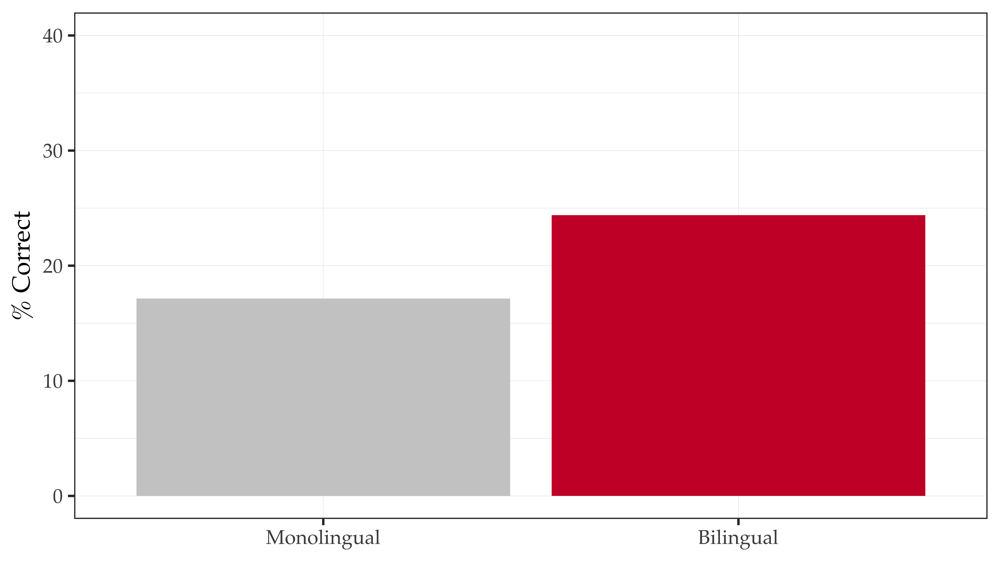
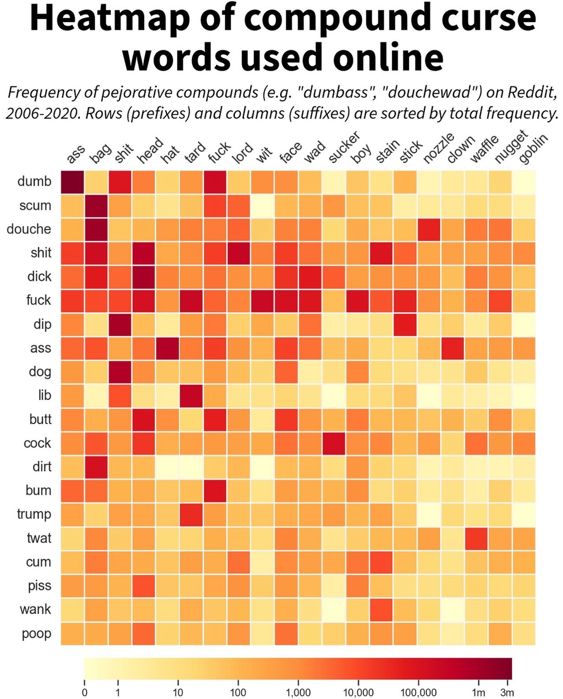

Data visualization for linguists
Joseph V. Casillas | Rutgers University
14th Pronunciation in Second Langauge Learning and Teaching
Purdue University
2023-09-06
Follow along
How to use this workshop
Do you know R?
Yes
- Follow along, do examples
- Watch
- Both (as attention allows)
No
- Watch
- Come back when time and resources allow
Goals
Goals (as researchers)
make elegant, truthful plots
help reader understand data
make process repeatable, shareable
Goals (today)
get you started making elegant,
truthful plots
discuss pitfalls, bad practices
provide resources to help you
continue learning
Just use a table…
the data speaks for itself…
“Stats don’t lie, but liars use stats”
“The numbers don’t lie, but liars use numbers”
(same idea)
It’s not easy…


Some principles of graphic design
üí©
CRAP üí©
Contrast
Repetition
Alignment
Proximity
Williams (2015)
Contrast
If two things aren’t the same, make them very different
- Colors
- complex
- accessibility for color blindness (color.adobe.com)
- Fonts
- weight
- size
- family
- Shapes

Repetition
Repeat themes throughout doc, presentation, article, etc.
- Colors palettes
- Fonts (families, weights, sizes)
- Other graphical elements (alignments, etc.)

Alignment
Elements on page/screen/plot have visual connection with something else on page/screen/plot
Heiss (2023)
Proximity
Group related items together
Focus on document layout
Probably less applicable to dataviz
You can learn to CRAP üí©
Example plots
Common types of plots
- Pie charts
- Bar graphs
- Boxplots
- Historgrams, density plots
- Scatterplots
- Heatmaps
- Etc.
Pie charts
Bar graphs
Boxplots
Historgrams, density plots
Scatterplots
Heatmaps

Grammar of graphics
What you need to know
Wilkinson (2012)
We are interesting in mapping
data to aesthetics
What is data?
- a column(s) in a dataframe
(excel, .csv, .tsv, etc.)
Aesthetics?
- a visual property of a plot,
i.e., position, shape, color, etc.

ggplot2 overview
Written by Hadley Wickham when he was a graduate student at Iowa State
Automatically deals with spacings, text, titles but also allows you to annotate by “adding”
Plots are built up in layers
Plot the data, overlay a summary, meta data and/or annotation
Components
Works with a dataframe
aesthetic mappings: how data are mapped to coordinates, color, size, shape, etc.
geoms: geometric objects like points, lines, boxplots, etc.
stats: statistical transformations
facets: ‘panels’ for conditional plots

| Data | Aesthetic | Geometry |
|---|---|---|
| Time | x-axis | point, line |
| Weight | y-axis | point, line |
| Chick | point | point, line |
| Diet | color, shape | point, shape |
| Data | aes() | geom_* |
|---|---|---|
| Time | x | geom_point |
| Weight | y | geom_point |
| Chick | color | geom_point |
| Diet | color, shape | geom_point + geom_line |
A template…
- DATA_FRAME will be replaced with your dataframe
- AESTHETIC will be replaced with the aesthetic mappings of your choice
- geom_xxx will be replaced with a specific geom, i.e.,
geom_point()
It starts with data
- Let’s take a look at a dataframe
Try using
head(new_data)andsummary(new_data)What kind of information did you learn about the dataframe?
Get to know the data
score proficiency group
1 0.45 0.57 bilingual
2 0.45 0.57 bilingual
3 0.53 0.47 bilingual
4 0.47 -0.97 monolingual
5 0.35 -0.84 monolingual
6 0.33 -1.56 monolingualAesthetics (aes())
Aesthetic mappings: how we map data to color, size, and axis…
Let’s update our template
Geometric objects (geom_*)
There are many types of geoms…
- geom_point()
- geom_smooth()
- geom_hist()
- geom_bar()
- geom_boxplot()
- etc.
Statistical transformations (stat_*)
stat_summary()will calculate a value (e.g., mean, median) and overlay it
Walkthrough with ggplot2
Let’s revist some basic plots
Histogram
Scatterplots
Boxplots
Point estimate + spread
Histogram
Scatterplot
Boxplot (box and whisker plot)
A better way… point estimate + spread
Faceting
- What about when we want to see more factors at once?
- For example, what if we want to see mpg as a function of am and cyl?
Faceting
- What about when we want to see more factors at once?
- For example, what if we want to see mpg as a function of am and cyl?
Solution 1b
Faceting
- What about when we want to see more factors at once?
- For example, what if we want to see mpg as a function of am and cyl?
Solution 2
More exercises
Using mtcars, create the following
a boxplot with a variable mapped to the
fillaesthetica boxplot with a variable mapped to the
coloraesthetic and a horizontal faceta scatterplot with a regression line (see
?geom_smooth)a scatterplot with a regression line (see
?geom_smooth) and a categorical factor (try the aestheticshape)a histogram of
mpgWhat does
geom_violin()do? What geom can it replace?
good principles (remember crap) colors highlight important things help audience (reader)
bad principles
practical examples take a bad plot and make it better
Help!
Resources
- https://datavizf23.classes.andrewheiss.com/syllabus.html
- Alberto Cairo, The Truthful Art: Data, Charts, and Maps for Communication (Berkeley, California: New Riders, 2016).
- Kieran Healy, Data Visualization: A Practical Introduction (Princeton: Princeton University Press, 2018), http://socviz.co/
- Claus E. Wilke, Fundamentals of Data Visualization (Sebastopol, California: O’Reilly Media, 2018), https://serialmentor.com/dataviz/
Getting help
If you have problems using ggplot2 ask for help in the slack channel
You can find some very basic tutorials related to plotting in R here
This is the final slide

you can add your email, twitter, github, etc. info here
Here is an example:
| joseph.casillas@rutgers.edu | |
| jvcasillas.com/quarto-rutgers-theme | |
| @jvcasill | |
| @jvcasillas |
References
Wilkinson, Leland. 2012. The Grammar of Graphics. Springer.
Williams, Robin. 2015. The Non-Designer’s Design Book: Design and Typographic Principles for the Visual Novice. Pearson Education.